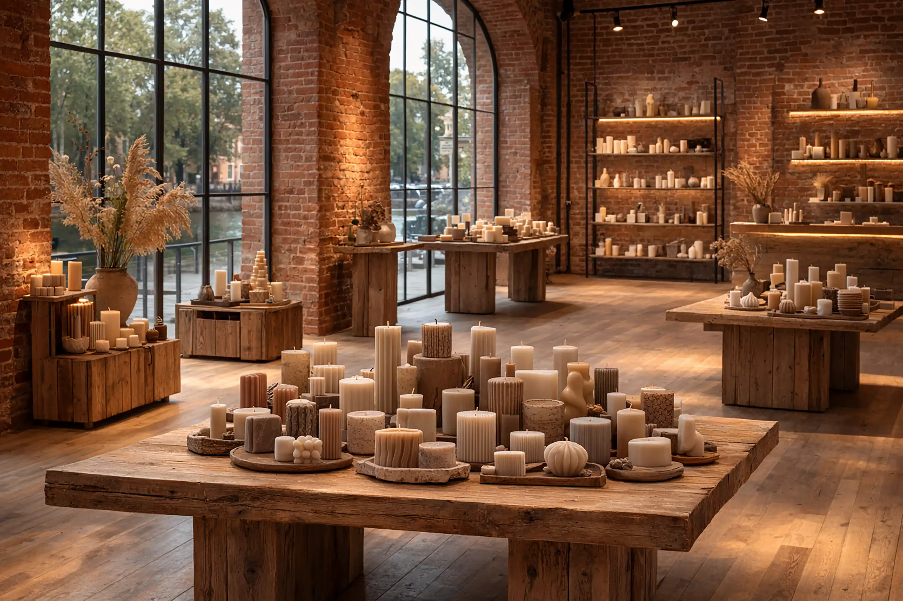

Every candle begins long before the flame. It starts with intention. Not production quotas, not conveyor belts, but a quiet decision to create something that will live in someone’s evening, someone’s memory, someone’s pause.
In our workshop, wax is not just material. It is the foundation of atmosphere. We carefully select natural wax blends for their clean burn, smooth texture, and ability to carry fragrance with depth and clarity. Each batch is measured, melted, and monitored by hand. Temperature matters. Timing matters. A few degrees too hot, and the fragrance loses its character. A few degrees too cool, and the surface loses its silk-like finish. Precision here is not mechanical. It is attentive.
Fragrance is the soul of the candle. Before it ever touches wax, it is evaluated on paper, on blotters, in the air. We test how it opens, how it settles, how it lingers. A good candle does not shout. It unfolds. Top notes greet you, heart notes stay with you, base notes anchor the room. When we blend fragrance with wax, it is done slowly, ensuring even distribution so that every burn releases the intended story.
The wick may look simple, but it is engineering disguised as cotton. We test different thicknesses and materials to match each vessel and formula. A wick too thin will drown. Too thick, and the flame becomes aggressive. The right wick creates a steady, calm burn that forms a full melt pool without smoke or tunneling. Balance is everything.

Pouring is done by hand. This is where craft becomes visible. Each vessel is prepared, centered, and filled with care. Air bubbles are removed. Surfaces are checked. After pouring, candles rest. They cure. This stage cannot be rushed. Over days, sometimes weeks, wax and fragrance bind together, deepening the scent and stabilizing performance.
We inspect every piece before it leaves the studio. The surface must be smooth. The wick must be centered. The vessel must feel substantial in the hand. When you light one of our candles, you are not lighting a product. You are lighting hours of attention.
Handmade means variation. No two candles are absolutely identical. A slight shift in texture, a subtle nuance in scent throw. These are not flaws. They are fingerprints. Proof that what you hold was created by people, not machines.
In a world designed for speed, we choose slowness. In a market full of mass production, we choose intention. The result is not just light, but presence. A handmade candle does more than scent a room. It shapes it. It softens corners. It turns space into sanctuary.
And it all begins with a single, steady flame.